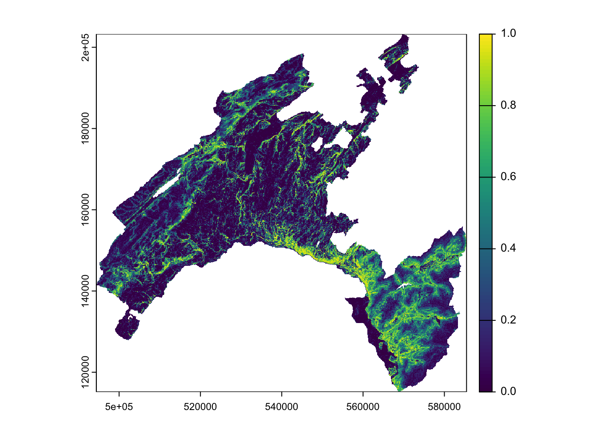
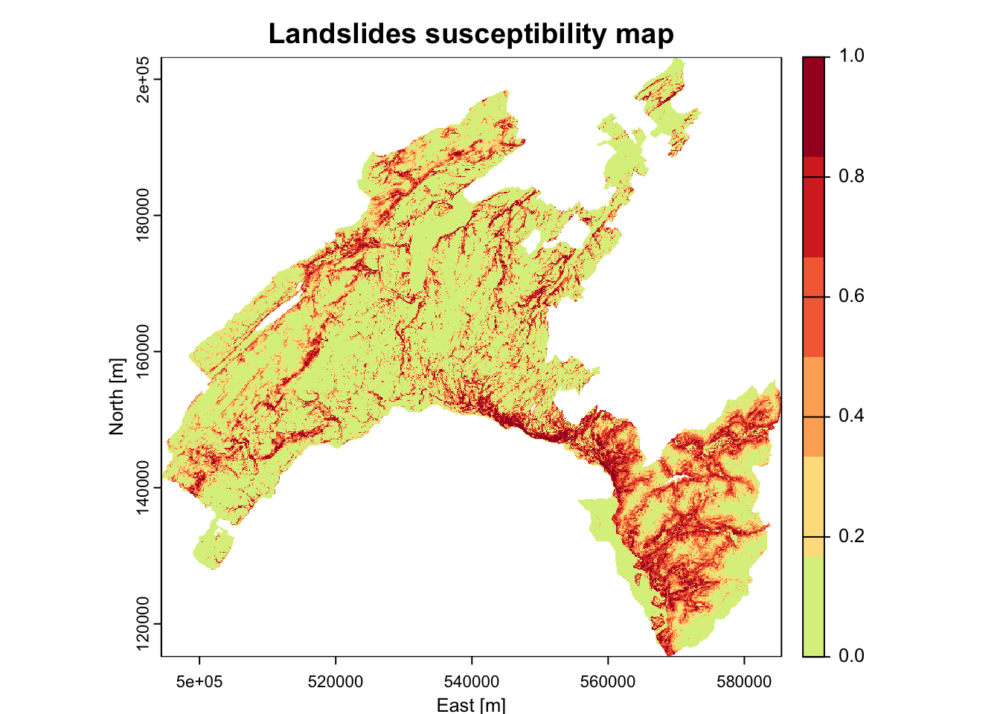
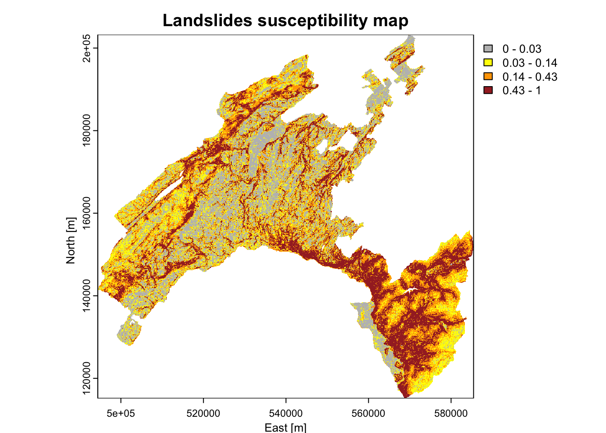
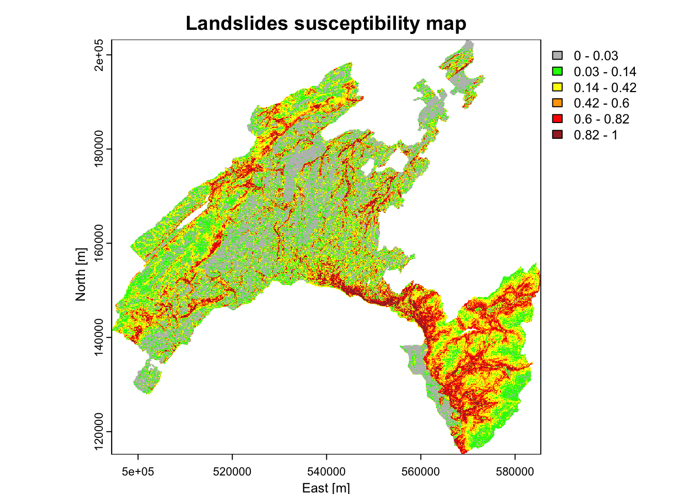

Chapter 11 5) Susceptibility map
You have now all the elements to elaborate the final landslide susceptibility map. This will be achieved by making predictions (of presence only) based on the values of the predictors, which are stored into multiple raster named *features*, created above.
# Convert the input multiple raster to data frame
features_df<-as.data.frame(features, xy=TRUE, na.rm=TRUE)
# Predict results of RF (probability of fires presence: index = 2) to the feature space
## this operation can take several minuts to run!
scp_map<-predict(object = RF_LS, newdata = features_df, type="prob", index=2)
scp_df=as.data.frame(scp_map) # convert to data frame
# get coordinates
scp_df$X=features_df$x
scp_df$Y=features_df$y
# Convert to raster the probability to get a landslide
## 3=X, 4=Y, 2=probability of presence (1)
scp_rast=rast(scp_df[,c(3,4,2)],type="xyz")
summary(scp_rast)
plot(scp_rast)
# Save all outputs
## this operation can take several minuts to run!
save.image(file="LSM_RF.RData")
# Export susceptibility map as raster
writeRaster(scp_rast,"Susceptibility_LSmap.tif",overwrite=T) 11.1 5.1) Class intervals for decision maker
What can you say by looking at the map? Actually a risk heat map is a data visualization tool for communicating the level for a specific risk to occur. These maps helps authorities to identify and prioritize the risks associated with a given hazard.
Normally an authority (i.e., a decision maker) prioritize its efforts based on the available resources it has. So, it can be more useful to detect the areas with the highest probability of burning based given intervals (i.e., breaks). The authority can thus concentrate its resources for preventive actions on a given percentage (such as 5%, 10%, or 20%) of the area with the highest probability of burning, instead of concentrate on the areas with a “stochastic” output probability value of 0.8 (for example).
- Susceptibility maps based on equal intervals, five classes (each 20%)
library("RColorBrewer")
plot(scp_rast, xlab = "East [m]", ylab = "North [m]", main = "Landslides susceptibility map", col = rev(c('#a50026','#d73027','#f46d43','#fdae61','#fee08b','#d9ef8b')))
- Breaks chosen based on the summary statics: these values corresponds to 0-25%-50%-75%-100% of the p-value distribution.
brk<-c(0, 0.03, 0.14, 0.43, 1)
plot(scp_rast, xlab = "East [m]", ylab = "North [m]",
main = "Landslides susceptibility map",
col = rev(c("brown", "orange", "yellow", "grey")), breaks=brk) 
- Breaks chosen based on well-established percentile classes
# Output predicted values are transformed to a vector
pred.vect <- as.vector(scp_map[, 2])
# The function "quantile" is used to fix classes
qtl.pred <- quantile(pred.vect,probs=c(0.25,0.5,0.75,0.85,0.95), na.rm = TRUE)
qtl.pred## 25% 50% 75% 85% 95%
## 0.026 0.138 0.424 0.606 0.824# and then extract the corresponding values
qtl.int<- c(0,0.03,0.14,0.42,0.6,0.82,1)
plot(scp_rast, xlab = "East [m]", ylab = "North [m]",
main = "Landslides susceptibility map",
col = rev(c("brown", "red", "orange","yellow", "green", "grey")), breaks=qtl.int)